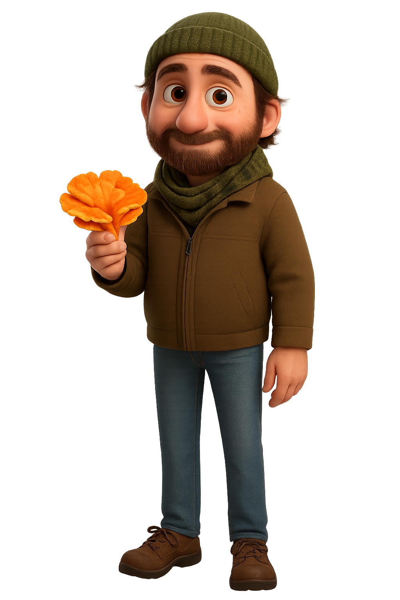

Addison Lilholt is not your average author — he's a collector of magic, a maker of mischief, and a master of finding the extraordinary in the everyday. His books open doorways to worlds where mushrooms giggle, worms dream of Earth, and dinner adventures cross continents.
🎒 A Few Fun Facts:
- Has eaten bugs (and liked it!)
- Can spot Chicken of the Woods from 30 feet away
- Built a working treehouse elevator (once... almost)
- Dreams of writing a field guide to backyard wonders
- Believes you can never pack too many snacks
Wherever there's a forest trail, a mushroom hiding under leaves, or a dream just waiting to be sketched, you'll probably find Addison nearby — notebook in one hand, magnifying glass in the other, and a backpack full of ideas.